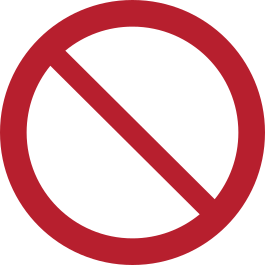
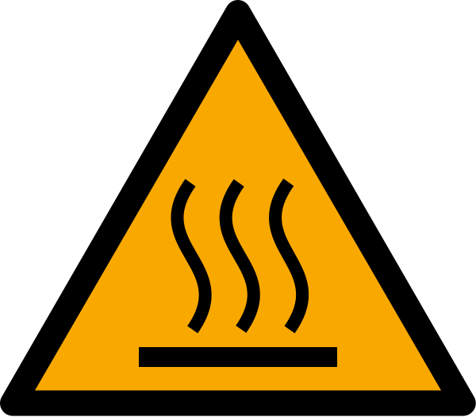
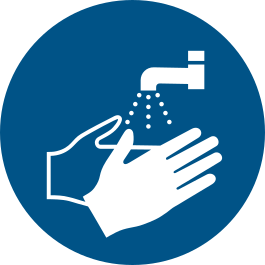

Прочитай інструкцію, назву речовини, концентрацію, сигнальне слово та попередження на етикетці.
Як читати маркування, працювати з речовинами та діяти безпечно під час навчального експерименту.
Безпечність роботи залежить не лише від властивостей речовини, а й від її концентрації, кількості, способу використання та засобів індивідуального захисту.
Прочитай інструкцію, назву речовини, концентрацію, сигнальне слово та попередження на етикетці.


Використовуй захисні окуляри, халат і рукавички відповідно до характеру роботи та інструкції.

Речовини в лабораторії не пробують на смак. Пари не вдихають безпосередньо з посудини.
Під час розведення концентрованої кислоти кислоту повільно додають до води, а не навпаки.

Отвір пробірки спрямовують від себе та інших людей; герметично закриті посудини не нагрівають.

Прибери робоче місце, поводься з відходами за інструкцією та вимий руки.
Використано знаки ISO 7010: M002, M004, M009, M010, P001, M001, W017 і M011. Загальні знаки M001 і P001 слід читати разом із текстом відповідного правила.
SVG-зображення без змін: Wikimedia Commons. M002: ISO, учасники Wikimedia Commons, джерело, CC BY-SA 3.0. Інші зображення позначені в джерелі як суспільне надбання; W017: MaxxL.
GHS використовує дев’ять основних піктограм небезпеки. Піктограма є лише частиною маркування: потрібно враховувати сигнальне слово, фрази про небезпеку, запобіжні заходи та паспорт безпечності хімічної продукції.
Вибухонебезпечні речовини, самореактивні речовини та органічні пероксиди окремих категорій.
Легкозаймисті, пірофорні, самонагрівні речовини та деякі інші пожежонебезпечні класи.
Окиснювальні речовини й суміші, які можуть посилювати горіння.
Гази під тиском: стиснені, зріджені, охолоджені зріджені або розчинені гази.
Корозійний вплив на метали, тяжкі опіки шкіри та серйозне ушкодження очей.
Гостра токсичність високих категорій небезпеки; речовина може бути токсичною або смертельною.
Подразнення шкіри або очей, сенсибілізація шкіри, шкідлива гостра токсичність та деякі інші небезпеки.
Зокрема канцерогенність, мутагенність, репродуктивна токсичність, сенсибілізація дихальних шляхів і специфічна токсичність для органів-мішеней.
Небезпека для водного середовища. Такі речовини не можна безконтрольно потрапляти у стоки чи водойми.
Спочатку перевір етикетку на упаковці. Якщо потрібна детальніша інформація про небезпеки, захист, першу допомогу, зберігання або відходи - звертайся до паспорта безпечності.
Паспорт безпечності містить докладні відомості про небезпеки хімічної продукції, правила роботи з нею, засоби захисту, першу допомогу, зберігання та поводження з відходами. Під час навчальної роботи найчастіше потрібні такі розділи:
Для конкретної речовини завжди орієнтуйся на її етикетку, інструкцію та паспорт безпечності.